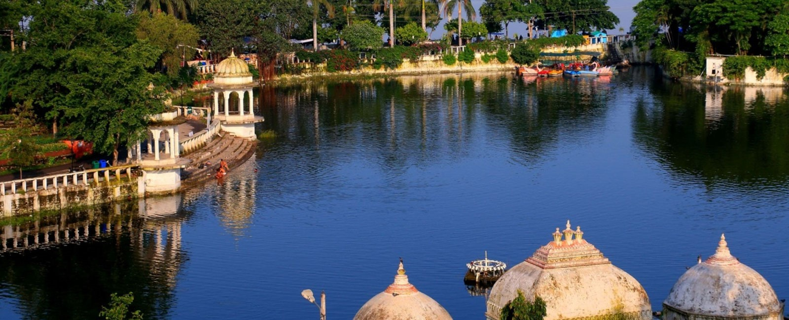

Doodh Talai
Doodh Talai Lake or Dudh Talai lake, is a small pond located adjacent to the Lake Pichola, near Shiva Niwas Palace (residence of Maharana Fateh Singh), in the heart of Udaipur, Rajasthan.
Access
The Doodh Talai Lake is located very much near the center of the Udaipur City.[citation needed] It is around 24 km away from Udaipur Airport, and just 3 km & 4 km away from Udaipur City railway station and Udaipur City Bus Depot, respectively.[citation needed] Visitors can also take local Tongas, auto-rickshaws and taxis to reach Doodh Talai
Attractions
Doodh Talai lake shares a common link road with another picturesque attraction Lake Pichola.[citation needed] Doodh Talai is surrounded by small hillocks which hosts Deen Dayal Upadhyay Park, and Manikya Lal Verma Garden (or Rock Garden or Musical Fountain Garden).Doodh Talai Lake provides few options for fast food centers, camel and horse rides and boat ride
Manikya Lal Verma Garden
The Manikya Lal Verma Garden (also known as Doodh Talai garden), has views of Lake Pichola and Doodh Talai Lake. It was constructed in year 1995 by Nagar Parhisad (Municipal Council) Udaipur.There are steps constructed to reach to the garden, as well as a separate road for vehicles.This hillock also has the Karni Mata Temple on the top.Inside the temple there is a white stone idol of the goddess Karni Mata
Pandit Deen Dayal Upadhyay Park
Pt. Deen Dayal Upadhyaya Park is another small garden located on the adjacent hillock to Manikya Lal Verma Garden. It was developed by Urban Improvement Trust (UIT) Udaipur. It also has Rajasthan’s first "Musical Fountain" manufactured by "Yagnik Mechanical Engineering Works".It offers a sunset point, from where the sun sets in the lap of lake Pichola reflecting crepuscular light.
The Ropeway
There is a ropeway from top of Deen Dayal Upadhyaya Park, which takes tourists to the Karni Mata temple. This ride is at a height of around 500 meters, and runs over a fixed grip mono cable.It is the first ropeway of Rajasthan.[citation needed] It is a 4 minute ride, which gives a beautiful view of the city including Lake Pichola, magnificent City Palace complex, Sajjangarh Fort and many more, from its cabin.